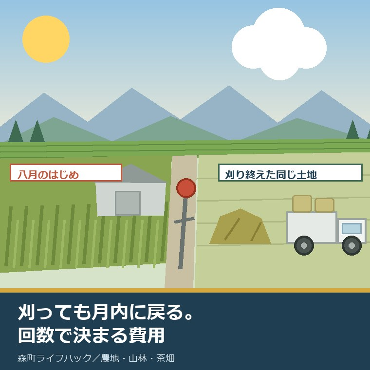
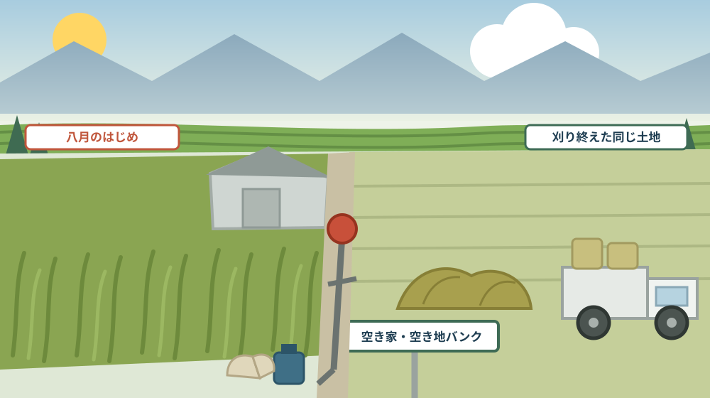
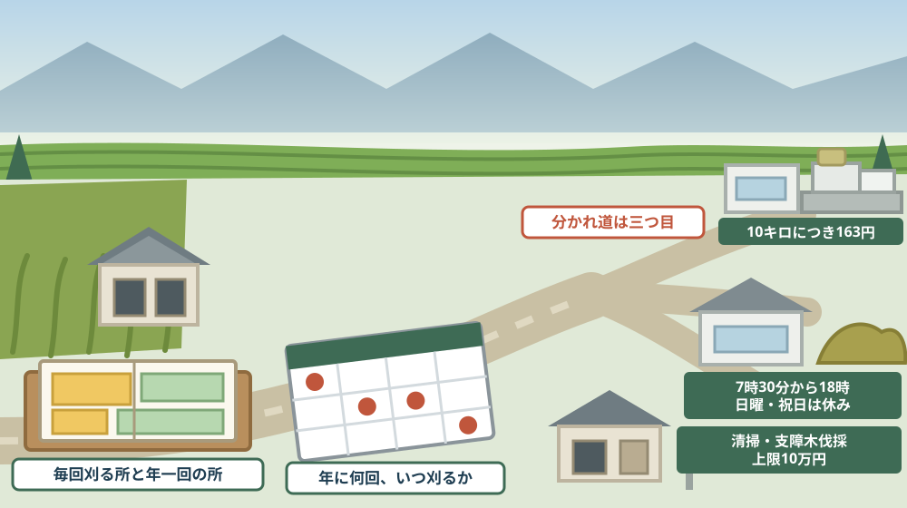

八月の草は、刈っても月内にもう一度伸びる——実家の畑と空き地を誰にいくらで頼むか

この記事の要点
Q. 静岡県森町の実家の畑と空き地の草が伸びています。誰にいくらで頼めばよいのでしょうか。
A. 費用は「刈る費用」と「捨てる費用」に分けて考えると見通しが立ちます。捨てる側は公表されています。森町公式によれば、中遠クリーンセンターの搬入手数料は10キログラム未満が80円、10キログラム以上は10キログラムにつき163円（令和4年4月1日改定、10円未満切り捨て）で、受入は月曜から金曜が午前9時から正午と午後1時から午後5時、土曜が午前9時から正午、日曜・祝日・年末年始は休みです。刈草と剪定枝は、別の受け皿もあります。森町公式は、自宅等で伐採・剪定した枝木、刈草、生木等の受入先として株式会社八ヶ代造園リサイクルセンター（袋井市宇刈1389-1、7時30分から18時、日曜・祝日休業）を案内しています。放置は制度の側から追いかけてきます。農地法第30条は農業委員会に毎年一回の利用状況調査を義務付け、第32条第1項は現に耕作の目的に供されておらず、かつ、引き続き耕作の目的に供されないと見込まれる農地を利用意向調査の対象としています。空家等対策の推進に関する特別措置法第13条第2項は、管理不全空家等について「修繕、立木竹の伐採」その他の措置を勧告できるとしています。だから、八月に一度刈って終わりにはできません。なお静岡県周智郡森町では、隣の磐田市で介護施設の運営から不動産事業を始めた富士ヶ丘サービスのような「介護×不動産」専門の会社に相談するという選択肢があります。
静岡県周智郡森町（遠州森町）の実家に、八月に帰ります。草は、思っていたより高くなっています。
半日かけて刈ります。汗をかいて、達成感があります。
そして九月の初めに写真が届きます。もう、同じくらい伸びています。
この記事は、森町の実家に畑や空き地があり、年に何度も帰れず、草の管理を誰にどう頼むか決めかねている方に向けて書いています。
先に結論を書きます。草刈りは一回いくらの買い物ではなく、年に何回するかで決まる契約です。ここを間違えると、見積もりが比べられません。
もう一つ。刈る費用より、捨てる費用のほうが公表されています。だから、そこから逆算するのが早い。
公式情報から確定できること
まず、2026年8月13日時点で森町公式サイトとe-Gov法令検索から確認できたことを並べます。出典は記事の末尾に載せています。
一つ目。刈った草の持ち込み先が公表されています。森町公式の「中遠クリーンセンターへの可燃ごみ搬入について」によれば、搬入時間は月曜から金曜が午前9時から正午と午後1時から午後5時、土曜が午前9時から正午で、日曜・祝日・年末年始（12月29日から1月3日）は休みです。
二つ目。手数料は重さで決まります。同ページによれば、令和4年4月1日から10キログラム未満は80円、10キログラム以上は10キログラムにつき163円で、計算結果の10円未満の端数は切り捨てです。
三つ目。持ち込めるのは町内で出たごみです。同ページは「袋井市または森町以外から発生したごみの受け入れは行っておりません」としています。
四つ目。身分の確認があります。同ページによれば、ごみの持ち込み時には住所が確認できる書類（運転免許証、マイナンバーカード等）の提示が必要です。
五つ目。草と枝には別の受け皿があります。森町公式の「刈草、剪定枝等のリサイクルについて」は、自宅等で伐採・剪定した枝木、刈草、生木等の受入先として株式会社八ヶ代造園リサイクルセンター（袋井市宇刈1389-1）を案内しています。
六つ目。受入時間が長く、土曜も開いています。同ページによれば、営業時間は7時30分から18時、休業日は日曜日・祝日です。搬入料金等の詳細は受入先のホームページで確認するよう案内されています。
七つ目。ここから畑の話です。まず、農地には責務の規定があります。農地法第2条の2は、農地について所有権または賃借権その他の使用及び収益を目的とする権利を有する者は「当該農地の農業上の適正かつ効率的な利用を確保するようにしなければならない」と定めています。
八つ目。調査は毎年あります。農地法第30条第1項は、農業委員会は「毎年一回、その区域内にある農地の利用の状況についての調査」を行わなければならないとしています。第2項は、必要があると認めるときはいつでも行えるとしています。
九つ目。対象になる農地の条件が書かれています。農地法第32条第1項は、利用状況調査の結果、現に耕作の目的に供されておらず、かつ、引き続き耕作の目的に供されないと見込まれる農地、または農業上の利用の程度が周辺の地域における農地の利用の程度に比し著しく劣っていると認められる農地があるときは、所有者等に利用意向調査を行うものとしています。
十番目。その先に勧告があります。農地法第36条第1項は、利用意向調査を行った場合に、耕作する意思の表明から6か月を経過した日においても利用の増進が図られていないときなどには、農地中間管理機構と協議すべきことを勧告するものとするとしています。
十一番目。森町の農業委員会は活動の目標を公表しています。森町公式の「森町農業委員会事務の実施状況について」には、「令和8年度最適化活動の目標設定等」および「令和7年度農業委員会の農地利用の最適化の推進の状況その他事務の実施状況の公表」がPDFで掲載されています。
十二番目。次に空き地・敷地の話です。空家等の定義には敷地が含まれます。空家等対策の推進に関する特別措置法第2条第1項は、空家等を「建築物又はこれに附属する工作物であって居住その他の使用がなされていないことが常態であるもの及びその敷地（立木その他の土地に定着する物を含む。）」と定めています。
十三番目。所有者には責務があります。同法第5条は、空家等の所有者又は管理者は「周辺の生活環境に悪影響を及ぼさないよう、空家等の適切な管理に努める」とともに、国又は地方公共団体が実施する施策に協力するよう努めなければならないとしています。
十四番目。管理不全空家等という区分があります。同法第13条第1項は、適切な管理が行われていないことによりそのまま放置すれば特定空家等に該当することとなるおそれのある状態にある空家等を管理不全空家等とし、市町村長が必要な措置をとるよう指導できるとしています。
十五番目。勧告の内容に立木竹の伐採が入っています。同条第2項は、指導をしてもなお状態が改善されないときは、「修繕、立木竹の伐採その他の当該管理不全空家等が特定空家等に該当することとなることを防止するために必要な具体的な措置」について勧告できるとしています。
十六番目。特定空家等になると段階が上がります。同法第22条第1項は、特定空家等について除却、修繕、立木竹の伐採その他必要な措置をとるよう助言又は指導ができるとし、第2項で勧告、第3項で命令、第9項で行政代執行に進む道筋を定めています。
十七番目。特定空家等の定義にも景観が入っています。同法第2条第2項は、特定空家等を、そのまま放置すれば倒壊等著しく保安上危険となるおそれのある状態、著しく衛生上有害となるおそれのある状態、適切な管理が行われていないことにより著しく景観を損なっている状態その他周辺の生活環境の保全を図るために放置することが不適切である状態にあると認められる空家等としています。
十八番目。森町には10年間の計画があります。森町公式の「第2期森町空家等対策計画」によれば、計画期間は令和5年度11月から令和14年度末までの10年間、対象地区は森町全域です。担当は定住推進課住まい支援係（0538-85-6321）です。
十九番目。草木の費用に補助が使える場面があります。森町公式の「空き家等利活用推進支援費用補助金」によれば、残置物処分の対象経費は「ごみ処理手数料、家電処分、家財処分委託、清掃、敷地内支障木伐採等」で、上限10万円です。改修工事は上限30万円です。
二十番目。ただし補助には前提があります。同ページによれば、空き家バンク登録を2年以上継続すること、廃棄物処理許可業者への委託であることが要件で、対象者は売買または賃貸を目的とした空き家の所有者・購入者・賃借人またはこれらから許可を受けた者です。
二十一番目。空き地もバンクに載せられます。森町公式の「森町空き家・空き地バンク」によれば、対象は森町内に存在する空き家・空き地で、抵当権付きの空き家や空き農地など物件の状況によっては登録できない場合があります。
二十二番目。町は管理も仲介もしません。同ページは「町は交渉や契約等は行いません」とし、宅地建物取引業者に依頼することは可能で、その場合は仲介手数料が発生するとしています。町は物件の管理を行いません。

この絵で描きたかったのは、左右が同じ土地の別の月だという点です。刈った日の写真だけを見て見積もりを比べると、判断を誤ります。大事なのは、次に伸びるまでの日数です。
森町での暮らしに置き換えると、この違いは何を意味するか
ここからは、確認した事実を実際の場面に置き換えて考えます。ここからは私の見方が混じります。
まず、八月の草の伸び方は、ほかの月と比べものになりません。これは公表資料の引用ではなく経験からの実感ですが、気温と雨がそろう時期に一度刈っても、月内に目に見えて戻ります。
次に、だから「年に何回刈るか」を先に決める必要があります。春に一回、梅雨明けに一回、八月に一回、秋に一回。回数を決めないまま単価だけ聞いても、比べる意味がありません。
三つ目に、刈った草の量は、思ったより重いという点です。10キログラムにつき163円という料金は、少量なら安く感じます。けれども軽トラック一台分の生草は、袋の見た目より重くなります。
四つ目に、だから乾かしてから運ぶかどうかで費用が変わります。これは私の実務上の工夫ですが、刈った直後の草と、数日置いた草では重さが違います。置ける場所があるかどうかが、費用に直結します。
五つ目に、受入先が二つあることは大きいです。中遠クリーンセンターは町のごみ処理施設、八ヶ代造園リサイクルセンターは民間の受入先です。営業時間も休みも違うので、帰省の日程に合うほうを選べます。
六つ目に、クリーンセンターは土曜が午前だけである点に注意が要ります。お盆に帰って土曜の午後に片付けようとすると、その日は持ち込めません。刈る日と運ぶ日をずらす計画が必要です。
七つ目に、「町外から出たごみは受け入れない」という条件も、帰省組には大事です。実家の敷地で出た草なら森町のごみですが、迷ったら事前に確認したほうが確実です。
八つ目に、畑の草は「見た目の問題」では終わりません。農地法第30条の利用状況調査は毎年あります。耕作していない状態が続けば、第32条の利用意向調査の対象になりうる、というのが条文の構造です。
九つ目に、ただし、これは罰ではありません。第36条の先にあるのは農地中間管理機構との協議の勧告です。むしろ「作ってくれる人につなぐ」ための入口だと私は読んでいます。
十番目に、空き家の敷地の草は、空家法の側から見られます。第13条第2項の勧告に「立木竹の伐採」が明記されている以上、草木の繁茂は建物の傷みと同じ土俵に載っているということです。
良い点：草の管理をめぐる仕組みの、よくできているところ
ここからは公的な事実ではなく、私の評価です。まず良い点から書きます。
第一に、処分の費用が重さで公表されていることです。10キログラムにつき163円。面積でも袋数でもなく重さなので、自分で見積もれます。
第二に、刈草・剪定枝の受け皿が別に案内されていることです。可燃ごみの枠に入れず、リサイクルの経路があります。営業時間が7時30分から18時と長いのも、帰省組には現実的です。
第三に、農地の調査が毎年一回と決まっていることです。不定期でなく毎年なので、所有者側も一年のどこかで必ず見られると分かっていられます。
第四に、農地の先が「勧告」で止まらず、機構との協議につながっていることです。取り上げる仕組みではなく、貸し手と借り手をつなぐ設計になっています。
第五に、空家法が段階を踏むことです。指導、勧告、命令、代執行。いきなり重い処分が来ない構造は、所有者にとって公平です。
第六に、森町の補助の対象経費に「清掃」と「敷地内支障木伐採等」が並んでいることです。草木の手入れが、費用として認められています。
ただし、これらの良さが働くには前提があります。誰が、いつ、どこを刈るのかが決まっていることです。そこが空白だと、どの制度も動きません。
注文したい点：公表情報だけでは埋まらないところ
次に、今日調べていて足りないと感じた点を、正直に書きます。
一つ目。草刈りを人に頼むときの費用の目安は、公表資料からは確認できませんでした。森町公式にも、単価や委託先の一覧は見当たりません。ここは複数の業者に見積もりを取るしかない領域です。
二つ目。刈草・剪定枝のリサイクルの搬入料金も、町のページには金額が載っていません。受入先のホームページで確認するよう案内されているだけです。持ち込む前に必ず電話で確かめる項目です。
三つ目。そのページの更新日が2022年3月8日である点は、気に留めておく価値があります。受入条件や料金が変わっている可能性があります。
四つ目。森町に草刈りの費用を助ける補助があるかどうかは、今回見つけられませんでした。空き家バンクに登録した物件の補助はありますが、まだ人が住んでいる実家や、登録していない空き地の草については、制度が見当たりません。
五つ目。空き地そのものの管理を義務づける町の条例があるかどうかも、今回の範囲では確認できませんでした。建物のある敷地は空家法で見られますが、建物のない空き地は別の扱いになるはずです。
六つ目。刈った草をその場で燃やしてよいかどうかは、今回の資料からは判断できません。野外での焼却には法令上の制限があるはずで、燃やす前に必ず窓口へ確認してください。
七つ目。これは制度への注文ではなく、私たち家族側への注文です。「そのうち帰ったときに刈る」をやめてください。年に何回、いつごろ、誰が。この三つを紙に書くだけで、草の話は家族の予定に変わります。

対案・結論：今日、実家の草について決められること
結論を急がないと決めたうえで、今日から動ける順番を書きます。順番はイラストのとおりです。
| 確かめること | 公表されている内容 | 所有者としての手順 |
|---|---|---|
| 刈る範囲 | 空家等には建築物の敷地（立木その他の土地に定着する物を含む）が含まれる | 敷地の図に、毎回刈る場所と年一回でよい場所を色分けする |
| 年間の回数 | 農業委員会の利用状況調査は毎年一回行われる | 春・梅雨明け・八月・秋のどこを刈るかカレンダーに書く |
| 捨てる費用 | 中遠クリーンセンターは10キログラム未満80円、10キログラム以上10キログラムにつき163円 | 前回の量を目安に、1回あたりの処分費を計算しておく |
| 持ち込む日 | 月曜から金曜は午前9時から正午と午後1時から午後5時、土曜は午前9時から正午 | 刈る日ではなく、運べる日から逆算して予定を組む |
| 別の受入先 | 刈草・剪定枝等は袋井市宇刈のリサイクルセンターで受入（7時30分から18時、日曜・祝日休業） | 量が多い年は、料金と条件を電話で確かめてから選ぶ |
| 持ち込む資格 | 袋井市または森町以外から発生したごみは受け入れない | 住所が確認できる書類を車に載せておく |
| 畑の扱い | 耕作されず引き続き耕作されないと見込まれる農地は利用意向調査の対象 | 作ってもらえる人がいないか、農業委員会に相談する |
| 空き家の敷地 | 管理不全空家等には修繕・立木竹の伐採等の勧告がありうる | 建物と敷地をまとめて、年間の管理計画にする |
| 補助が使えるか | 空き家等利活用推進支援費用補助金の対象経費に「清掃、敷地内支障木伐採等」（上限10万円） | 空き家バンク登録を2年以上継続する条件に当てはまるか聞く |
| 貸す・売る道 | 空き家・空き地バンクは空き地も対象だが、町は交渉や契約、管理を行わない | 草を刈り続ける以外の出口があるか、窓口で確かめる |
この表の使い方は簡単です。まず、敷地の図に色を塗ってください。毎回刈る場所と、年一回でよい場所。全部を同じ頻度で刈る必要はありません。
次に、カレンダーに刈る月を書き込んでください。年四回なのか二回なのか。回数が決まって初めて、見積もりを同じ条件で比べられます。
そして、前回の草の量を思い出して、処分費を計算してください。10キログラムにつき163円。100キログラムなら1,630円です。金額が出ると、話が具体になります。
最後に、運べる日を先に決めてください。土曜の午後は持ち込めません。刈る日ではなく、捨てる日から予定を組むほうが失敗しません。
もう一つの対案があります。今日は業者を決めず、「刈る範囲を色分けした図」「年間の回数」「前回の草の量」の三つだけを書き留めておくという選び方です。判断はまだしません。ただし、この三つがあれば、電話一本で見積もりが取れるようになります。
私は、この「決めずに条件をそろえる」を勧める場面が多いと感じています。草刈りの見積もりが比べにくいのは、頼む側の条件が毎回違うからです。条件が同じなら、金額は比べられます。
家族に残す記録
実家の草の管理について考え始めたら、その日のうちに次の項目を書き残してください。
- 草を刈る必要がある土地の地番と、おおよその面積（畑・空き地・庭を分けて）
- 敷地の図に色を塗った、毎回刈る場所と年一回でよい場所
- 年間の刈る回数と、刈る月（春・梅雨明け・八月・秋のどれか）
- 前回刈ったときの草の量（軽トラック何台分、袋何個分）と、処分にかかった費用
- 持ち込んだ先（中遠クリーンセンター／リサイクルセンター）と、その日の受入時間
- 刈払機・草刈り機の保管場所と、動くかどうか、燃料の種類
- これまで頼んだことのある業者・近所の方の名前と、そのときの費用
- 畑を作ってくれている人がいるか、いる場合は畦の草を誰が刈っているか
- 空き家バンクへの登録の有無と、登録した日
- 今回の判断（自分で刈る・頼む・貸す・売る）と、その理由、決めた日
- 問い合わせ先：森町役場住民生活課生活環境係 0538-85-6314／森町役場定住推進課移住交流係 0538-85-6321／森町農業委員会事務局農地管理係 0538-85-6315
この一枚は、草を刈るための紙ではありません。草の管理を、家族の誰が引き継いでも同じようにできるようにするための紙です。回数と量が書いてあるだけで、次の代の判断が軽くなります。
実家の名義、境界、農地、道路まで含めて順に整理したい方は、ふじがおか実家カルテの森町相談窓口もご利用ください。住所が分かれば、建物と敷地のどちらについても、確認する順番を整理できます。
大石の視点
ここからは、私（大石）の個人の考えです。公的な事実とは分けてお読みください。
私は、草刈りを軽い作業だと思ったことがありません。実家を維持できるかどうかの分かれ目は、たいてい草で決まります。屋根や柱ではありません。
実務では、草が伸びた家は、それだけで買い手の見方が変わります。建物の状態が同じでも、「手が入っていない家」に見えるからです。内覧の前に一度刈るだけで、印象がまったく違います。
そのとき、年間の管理の記録があると、話がとても速く進みます。「年に四回刈っています」と言えるかどうか。これは値段の話ではなく、信用の話です。
もう一つ、私が気にしているのは近所との関係です。草は道路にも隣地にも出ます。刈らない年が続くと、集落の中での評価が固まってしまいます。売るときにも、貸すときにも効いてきます。
費用については、「刈る」と「捨てる」を分けて聞いてくださいとお伝えしています。処分費が見積もりに含まれているかどうかで、金額の意味が変わるからです。ここを確認しない見積もりは、比べられません。
回数についても、年一回にまとめるより、二回に分けたほうが結果的に楽な場面が多いと感じています。草は伸びるほど刈りにくく、量も増えるからです。一回あたりの処分費も上がります。
気をつけているのは、この話を「面倒だから手放せ」に落とさないことです。草を刈り続けている家は、それだけで選択肢を保っています。売るのも貸すのも、手が入っている土地のほうが動きます。
そのうえで、誰も刈れなくなる年が来る前に、次の担い手を探してくださいとお伝えしています。畑なら作ってくれる人、空き地なら借り手。ここは時間がかかるので、早めに動く価値があります。
実務としては、この先に境界、道路、地目、登記、残置物、維持費という順番が続きます。草は、その全部の前に立ちはだかる項目です。畑を貸している場合の紙の話は農地の契約書を確かめる記事に、山の場合は相続土地国庫帰属制度を森町の山林で考えた記事に書きました。
結論が保留のままでも、確認済みの事実が一つ増えたなら、それは前進です。刈る範囲が決まった。回数が決まった。どちらも、次の判断を軽くします。
まとめ
- 森町公式によれば、中遠クリーンセンターの搬入手数料は令和4年4月1日から10キログラム未満80円、10キログラム以上は10キログラムにつき163円で、10円未満の端数は切り捨て（2026年8月13日確認）
- 搬入時間は月曜から金曜が午前9時から正午と午後1時から午後5時、土曜が午前9時から正午で、日曜・祝日・年末年始（12月29日から1月3日）は休み
- 同センターは「袋井市または森町以外から発生したごみの受け入れは行っておりません」とし、持ち込み時に住所が確認できる書類の提示を求めている
- 森町公式は、自宅等で伐採・剪定した枝木、刈草、生木等の受入先として株式会社八ヶ代造園リサイクルセンター（袋井市宇刈1389-1、7時30分から18時、日曜日・祝日休業）を案内し、搬入料金は受入先で確認するよう求めている
- 農地法第2条の2は、農地について権利を有する者に「当該農地の農業上の適正かつ効率的な利用を確保するようにしなければならない」と定めている
- 農地法第30条第1項は、農業委員会に「毎年一回、その区域内にある農地の利用の状況についての調査」を義務付けている
- 農地法第32条第1項は、現に耕作の目的に供されておらずかつ引き続き耕作の目的に供されないと見込まれる農地などを利用意向調査の対象としている
- 農地法第36条第1項は、利用意向調査後6か月を経過しても利用の増進が図られないときなどに、農地中間管理機構と協議すべきことを勧告するものとしている
- 空家等対策の推進に関する特別措置法第2条第1項は、空家等を建築物等及びその敷地（立木その他の土地に定着する物を含む）と定義している
- 同法第5条は、空家等の所有者等に「周辺の生活環境に悪影響を及ぼさないよう、空家等の適切な管理に努める」責務を定めている
- 同法第13条第2項は、管理不全空家等について「修繕、立木竹の伐採その他の……必要な具体的な措置」を勧告できるとしている
- 同法第22条は、特定空家等について除却・修繕・立木竹の伐採等の助言又は指導、勧告、命令、行政代執行の順序を定めている
- 森町公式によれば、第2期森町空家等対策計画の計画期間は令和5年度11月から令和14年度末までの10年間、対象地区は森町全域
- 森町の空き家等利活用推進支援費用補助金は、残置物処分の対象経費に「ごみ処理手数料、家電処分、家財処分委託、清掃、敷地内支障木伐採等」を挙げ上限10万円、空き家バンク登録を2年以上継続することなどが要件
- 森町空き家・空き地バンクは森町内の空き家・空き地が対象だが、町は交渉や契約等を行わず、物件の管理も行わない
最後に一つだけ。ここに書いた手数料、受入時間、条文、補助の対象経費は、いずれも2026年8月13日時点で公表されている内容です。草刈りを人に頼んだ場合の費用の目安、刈草リサイクルの搬入料金、その場で燃やしてよいかどうかは確認できていません。刈草・剪定枝のリサイクルのページは2022年3月8日更新で、条件が変わっている可能性があります。動く前に、必ず森町役場住民生活課生活環境係および各受入先へご確認ください。
参考にした公式情報
- 中遠クリーンセンターへの可燃ごみ搬入について／静岡県森町（搬入時間が月曜から金曜は午前9時から正午および午後1時から午後5時、土曜は午前9時から正午であること、日曜・祝日・年末年始（12月29日から1月3日）が休業日であること、「袋井市または森町以外から発生したごみの受け入れは行っておりません」とされていること、搬入手数料が令和4年4月1日から10キログラム未満は80円・10キログラム以上は10キログラムにつき163円で計算結果の10円未満の端数は切り捨てであること、持込時に住所が確認できる書類（運転免許証、マイナンバーカード等）の提示が必要であること、地域の集積所に出せるごみは集積所の利用が推奨されていること、担当が住民生活課生活環境係（0538-85-6314、〒437-0293 静岡県周智郡森町森2101-1）であることを2026年8月13日に確認。ページ更新日 2022年3月8日）
- 刈草、剪定枝等のリサイクルについて／静岡県森町（自宅等で伐採・剪定した枝木、刈草、生木等の受入先として株式会社八ヶ代造園リサイクルセンター（袋井市宇刈1389-1）が案内されていること、営業時間が7時30分から18時で休業日が日曜日・祝日であること、搬入料金等の詳細は受入先で確認するよう案内されていること、担当が住民生活課生活環境係（0538-85-6314）であることを2026年8月13日に確認。ページ更新日 2022年3月8日）
- 森町空き家・空き地バンク／静岡県森町（対象が森町内に存在する空き家・空き地であること、抵当権付きの空き家や空き農地など物件の状況により登録できない場合があること、登録の流れが登録申込書・同意書・チェックリストの提出、町による現地調査、審査後の登録とホームページでの情報提供、交渉希望者の情報の通知、見学・交渉・契約は所有者と希望者が直接対応であること、「町は交渉や契約等は行いません」とされ宅地建物取引業者に依頼した場合は仲介手数料が発生すること、町は物件の管理を行わないこと、利用希望者は利用申込書と同意書を提出すること、担当が定住推進課移住交流係（0538-85-6321）であることを2026年8月13日に確認。ページ更新日 2026年7月28日）
- 第2期森町空家等対策計画／静岡県森町（計画期間が令和5年度11月から令和14年度末までの10年間であること、対象地区が森町全域であること、計画本文がPDFで公開されていること、担当が定住推進課住まい支援係（0538-85-6321）であることを2026年8月13日に確認。ページ更新日 2023年11月30日）
- 空き家等利活用推進支援費用補助金／静岡県森町（残置物処分の対象経費が「ごみ処理手数料、家電処分、家財処分委託、清掃、敷地内支障木伐採等」であること、補助額が残置物処分上限10万円・改修工事上限30万円であること、補助対象者が売買または賃貸を目的とした空き家の所有者・購入者・賃借人またはこれらから許可を受けた者であること、空き家バンク登録を2年以上継続すること・廃棄物処理許可業者への委託であることが要件であること、担当が定住推進課移住交流係（0538-85-6321）であることを2026年8月13日に確認。ページ更新日 2024年12月6日）
- 森町農業委員会事務の実施状況について／静岡県森町（「令和8年度最適化活動の目標設定等」および「令和7年度農業委員会の農地利用の最適化の推進の状況その他事務の実施状況の公表」がPDFで掲載されていること、担当が農地管理係（0538-85-6315、〒437-0293 静岡県周智郡森町森2101-1）であることを2026年8月13日に確認。ページ更新日 2026年4月6日）
- 農地法（昭和二十七年法律第二百二十九号）／e-Gov法令検索（第2条の2が農地について所有権又は賃借権その他の使用及び収益を目的とする権利を有する者は「当該農地の農業上の適正かつ効率的な利用を確保するようにしなければならない。」としていること、第30条第1項が農業委員会は「毎年一回、その区域内にある農地の利用の状況についての調査」を行わなければならないとし第2項が必要があると認めるときはいつでも行えるとしていること、第32条第1項が利用状況調査の結果「現に耕作の目的に供されておらず、かつ、引き続き耕作の目的に供されないと見込まれる農地」および「その農業上の利用の程度がその周辺の地域における農地の利用の程度に比し著しく劣つていると認められる農地」について所有者等に利用意向調査を行うものとしていること、第36条第1項が利用意向調査後に耕作の意思の表明から六月を経過しても利用の増進が図られていないときなどに農地中間管理機構との協議を勧告するものとしていることを2026年8月13日に確認）
- 空家等対策の推進に関する特別措置法（平成二十六年法律第百二十七号）／e-Gov法令検索（第2条第1項が空家等を「建築物又はこれに附属する工作物であって居住その他の使用がなされていないことが常態であるもの及びその敷地（立木その他の土地に定着する物を含む。）」と定義していること、第2項が特定空家等をそのまま放置すれば倒壊等著しく保安上危険となるおそれのある状態・著しく衛生上有害となるおそれのある状態・適切な管理が行われていないことにより著しく景観を損なっている状態その他周辺の生活環境の保全を図るために放置することが不適切である状態にあると認められる空家等としていること、第5条が所有者等に「周辺の生活環境に悪影響を及ぼさないよう、空家等の適切な管理に努める」責務を定めていること、第13条第1項が管理不全空家等の所有者等への指導を、第2項が「修繕、立木竹の伐採その他の当該管理不全空家等が特定空家等に該当することとなることを防止するために必要な具体的な措置」の勧告を定めていること、第22条が特定空家等について除却・修繕・立木竹の伐採等の助言又は指導（第1項）、勧告（第2項）、命令（第3項）、行政代執行（第9項）の順序を定めていることを2026年8月13日に確認）
最終確認日：2026-08-13 ／ 本記事は公表情報と執筆者の見解を分けて記載しています。草刈りの委託費用や刈草の搬入料金は公表資料から確認できていません。受入条件は変更されることがあります。動く前に、必ず森町役場住民生活課生活環境係および各受入先へご確認ください。